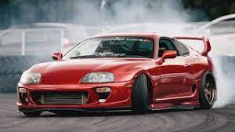

Comme dans plusieurs choses, il est toujours mieux de finir avec le meilleur. Aujourd'hui, le meilleur
est la Toyota Supra :

LA raison pourquoi cette voiture a été sélectionnée en dernier est à cause de sa fameuse popularité
dans la franchise des "Fast and Furious". Cette voiture à été et est encore à ce jour une des voitures
JDM (Japanese Domestic Market) les plus populaires au monde. Il y a plusieurs raisons pourquoi les gens
l'adore et en voici quelques raisons.